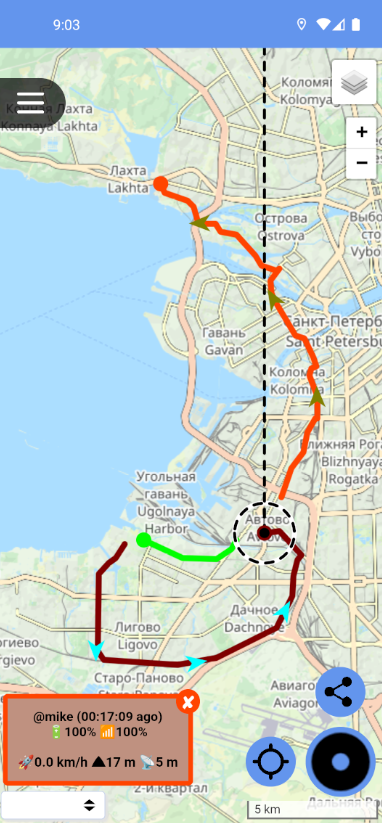
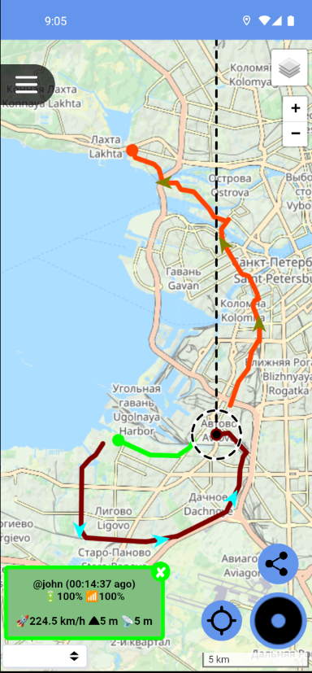
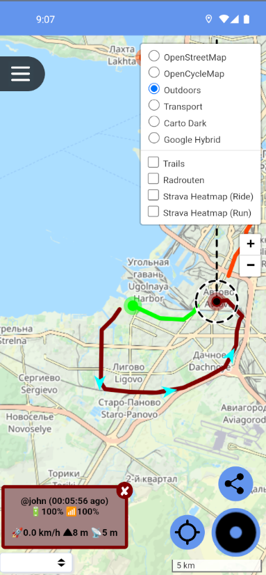
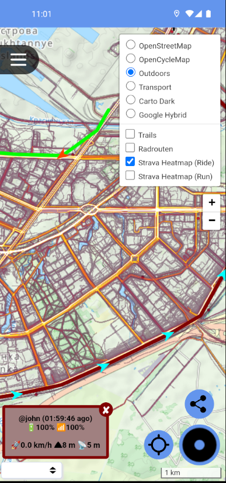
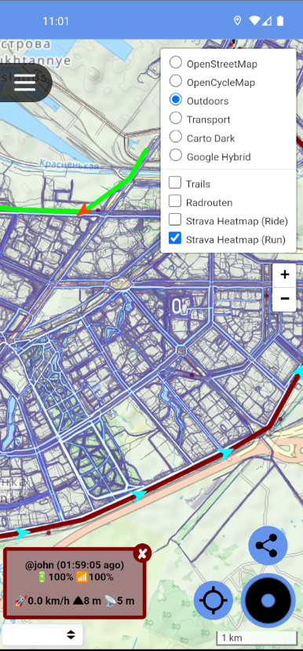
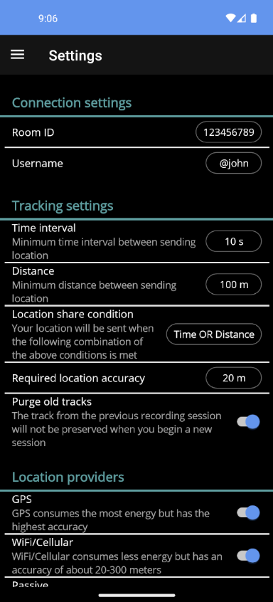
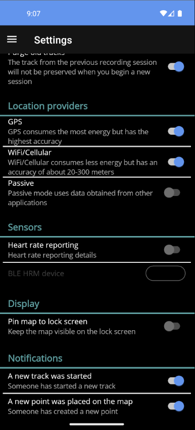
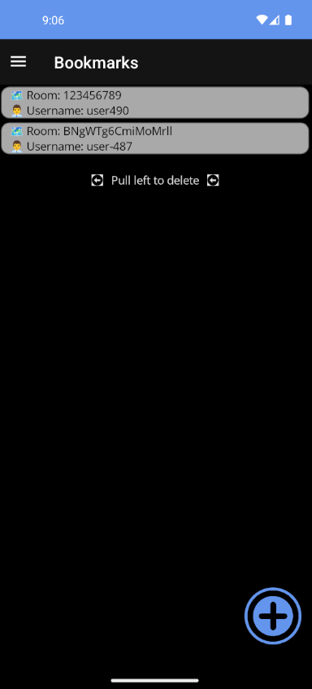

プロジェクトの概要
Roadnik（ロードニク）は、リアルタイムで位置情報を共有するためのオープンソースプロジェクトです。
このプロジェクトは2つの部分で構成されています：
ウェブアプリ
ブラウザで動くインタラクティブな地図。リアルタイムで経路を表示します。
Roadnikアプリ
GPS位置情報をサーバーに送信するAndroidのモバイルクライアントアプリ。
Roadnikサーバー
Roadnikサーバーは、位置情報を受け取って保存するアプリケーションです。 Linux と Windows の両方で動かすことができます。
ルームとキーの仕組み
保存できるデータ
| データ | 説明 |
|---|---|
| ニックネーム | ユーザーの名前 |
| 緯度・経度 | GPS座標 |
| 高度 | 海抜（メートル） |
| 速度 | 移動速度（メートル/秒） |
| バッテリー残量 | スマートフォンのバッテリー（%） |
| 電波強度 | モバイルネットワークの強さ |
| 心拍数 | BLEセンサーで計測した心拍数（回/分） |
| 方位 | 移動している方向（度） |
Roadnikアプリ（Android）
Roadnikアプリは、スマートフォンのGPS位置情報をサーバーに送信するAndroidアプリです。
地図画面

地図と経路の表示
経路の詳細表示
地図タイプの選択- 現在地とこれまでの経路を地図上に表示
- ユーザーの情報（速度・高度・バッテリー残量など）がポップアップで確認できる
- 街の地図・自転車用・アウトドア用・衛星写真など、複数の地図タイプが選べる
- Strava Heatmap のオーバーレイにも対応（サイクリングとランニングのコース熱地図）
- BLE対応の心拍センサーと接続して、心拍数をリアルタイムで記録・送信できる
心拍数モニタリング
RoadnikアプリはBLE（Bluetooth Low Energy）対応の心拍センサーと接続することができます。 センサーを装着しながら移動すると、心拍数が位置情報と一緒にサーバーに送信されます。 ランニングやサイクリングなどのアクティビティ中に、自分の体の状態を記録することができます。
Strava Heatmap オーバーレイ
Strava Heatmap は、世界中のユーザーが実際に走ったルートを地図上に重ねて表示する機能です。 よく使われているルートは明るく表示され、あまり使われていないルートは暗く表示されます。 この機能を使うと、知らない場所でも人気のあるサイクリングコースやランニングコースを簡単に見つけることができます。

サイクリング
ランニング設定画面

設定画面（1）
設定画面（2）設定画面では以下を設定できます：
- サーバーのURLとルームのキー
- ユーザーのニックネーム
- 位置情報の送信間隔
- 地図の表示設定
ブックマーク機能

ブックマーク機能ブックマーク機能を使うと、よく行く場所や重要な地点を保存して、 すぐに地図上で確認することができます。
ウェブアプリ
ウェブアプリはブラウザで使えるインタラクティブな地図です。

ウェブアプリの地図画面 ― 複数ユーザーの経路をリアルタイムで表示
主な機能
- 指定したルームの経路をリアルタイムで表示
- 地図の種類を複数から選ぶことができます（街の地図・自転車用・アウトドア用など）
- 自動追跡機能（最新の位置に自動的にカメラが移動）
- 複数ユーザーの経路を同時に表示
公開サーバー
自分でサーバーを立てなくても、roadnik.app という公開サーバーを無料で利用できます。
アカウント不要
登録やログインなしで、すぐに使い始めることができます。
プライバシー保護
IPアドレスやデバイス情報などの個人情報は保存されません。
キーによるアクセス制御
キーを知っている人だけが位置情報にアクセスできます。
まとめ
| 機能 | 説明 |
|---|---|
| リアルタイム共有 | 位置情報をリアルタイムで家族や仲間と共有できる |
| プライバシー保護 | 個人情報を保存しない設計 |
| オープンソース | GitHubで公開、誰でも自由に使える |
| セルフホスト可能 | 自分のサーバーで動かすことができる |
| 公開サーバー | roadnik.appを無料で利用可能 |
| クロスプラットフォーム | サーバーはLinux・Windowsに対応 |